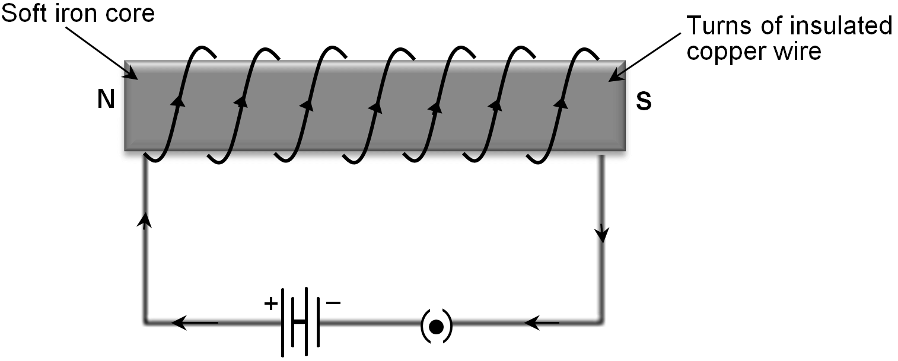
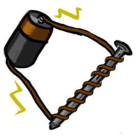
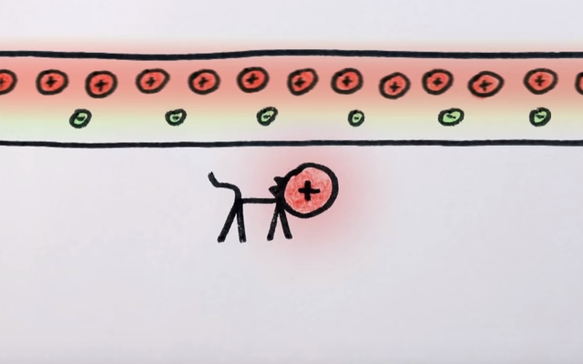

<!DOCTYPE html>
<html lang="no">
<head>
    <meta charset="UTF-8">
    <meta name="author" content="Silje Stadheim">
    <meta name="viewport" content="width=device-width, initial-scale=1">
    <title>Oppgave 2</title>
    <script>
        window.onload = oppstart;

        function oppstart() {
            visBilder();
        }

        function visBilder() {
            //setter inn alle bildene på siden
            var innpakning = document.createElement("div");
            innpakning.style = "display: flex; flex-direction: row;"; //setter alt i innpakningen (altså bildene) ved siden av hverandre for ordens skyld
            var bilde1 = document.createElement("div");
            bilde1.innerHTML = "";  //a setter inn bilde med bestemt størrelse (regnet på forholdet blir riktig så bildet ikke blir forvrengt)
            var bilde2 = document.createElement("div");
            bilde2.innerHTML = "";
            var bilde3 = document.createElement("div");
            bilde3.innerHTML = "";
            innpakning.appendChild(bilde1);
            innpakning.appendChild(bilde2);
            innpakning.appendChild(bilde3);
            document.body.appendChild(innpakning);

            bilde1.onclick = function () {
                document.body.removeChild(innpakning);
                bilde1a();
            };
            bilde2.onclick = function () {
                document.body.removeChild(innpakning);
                bilde2b();
            };
            bilde3.onclick = function () {
                document.body.removeChild(innpakning);
                bilde3c();
            };
        }

        function bilde1a() {
            var bilde1 = document.createElement("div");
            bilde1.innerHTML = "";  //a setter inn bilde med uredigert (altså original) størrelsen
            document.body.appendChild(bilde1);

            //trykk på bildet igjen og du går til startsiden
            bilde1.onclick = function () {
                document.body.removeChild(bilde1);
                oppstart();
            }
        }

        function bilde2b() {
            var innpakning = document.createElement("div");

            //lager lydavspillingselement som spiller av siden synes personlig det er den mest elegante måten å gjøre det på.
            var lydspiller = document.createElement("audio");
            lydspiller.controls = "controls";
            var lyd = document.createElement("source");
            lyd.src = "how_magnets_work.mp3";
            lyd.type = "audio/mpeg";
            lyd.innerHTML = "404 ERROR <br> Nettleseren din støtter ikke lydavspilling";
            lydspiller.appendChild(lyd);
            innpakning.appendChild(lydspiller);
            lydspiller.play();

            /* annen måte er å er å spille av lyden og så ha en ekstern knapp til pause og play (kan lage 2 ulike, men lagde kun 1 for begge nå)
            VIKTIG! "Avsnittet" over må kommenteres ut for at denne koden skal funke
            var lyd = new Audio ("how_magnets_work.mp3");
            lyd.play();
            var pause = document.createElement("button");
            pause.type = "button";
            pause.innerHTML = "Pause/Play";
            var trykk = 0;
            pause.onclick = function () {
                if(trykk === 0) {
                   lyd.pause();
                   trykk++;
                }
                else {
                    lyd.play();
                    trykk = 0;
                }
            };
            innpakning.appendChild(pause);
            */

            //knapp til å komme tilbake bare
            var tilbake = document.createElement("button");
            tilbake.type = "button";
            tilbake.innerHTML = "Tilbake til startsiden";
            innpakning.appendChild(tilbake);
            document.body.appendChild(innpakning);
            tilbake.onclick = function () {
                lyd.pause();
                document.body.removeChild(innpakning);
                oppstart();
            }
        }
        
        function bilde3c() {
            var innpakning = document.createElement("div");
            var video = document.createElement("video");
            video.innerHTML = "<source src='magnetens_hemmelighet_silje.mp4' type='video/mp4'> 404 ERROR <br> Nettleseren støtter ikke video";
            video.play();

            video.controls = "controls"; //den fineste og beste måten å legge til play/pause funksjonalitet
            /* kan også gjøres med hvilket som helst element man kan ta onclick på om man vil må absolutt programmere overdrevet mye
            var pause = document.createElement("button");
            pause.type = "button";
            pause.innerHTML = "Pause/Play";
            var trykk = 0;
            pause.onclick = function () {
                if(trykk === 0) {
                   video.pause();
                   trykk++;
                }
                else {
                    video.play();
                    trykk = 0;
                }
            };
            innpakning.appendChild(pause);
            */

            innpakning.appendChild(video);

            //knapp til å komme tilbake bare
            var tilbake = document.createElement("button");
            tilbake.type = "button";
            tilbake.innerHTML = "Tilbake til startsiden";
            innpakning.appendChild(tilbake);
            document.body.appendChild(innpakning);
            tilbake.onclick = function () {
                document.body.removeChild(innpakning);
                oppstart();
            }
        }

        /* d
         Hele oppbyggingen av oppgaven gjør at bildene blir elegant erstattet med oppgaven så noe overlapping av lyd er aldri noe problem (6+ materiale)
         den er også kjempe stygg med plasseringen av knappen osv, men størrelsene og alt sånt er riktig og er tydeligvis kun det som telles
          */


    </script>
    <style>

    </style>
</head>
<body>

</body>
</html>